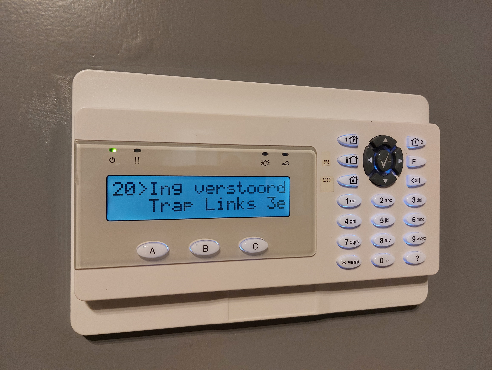
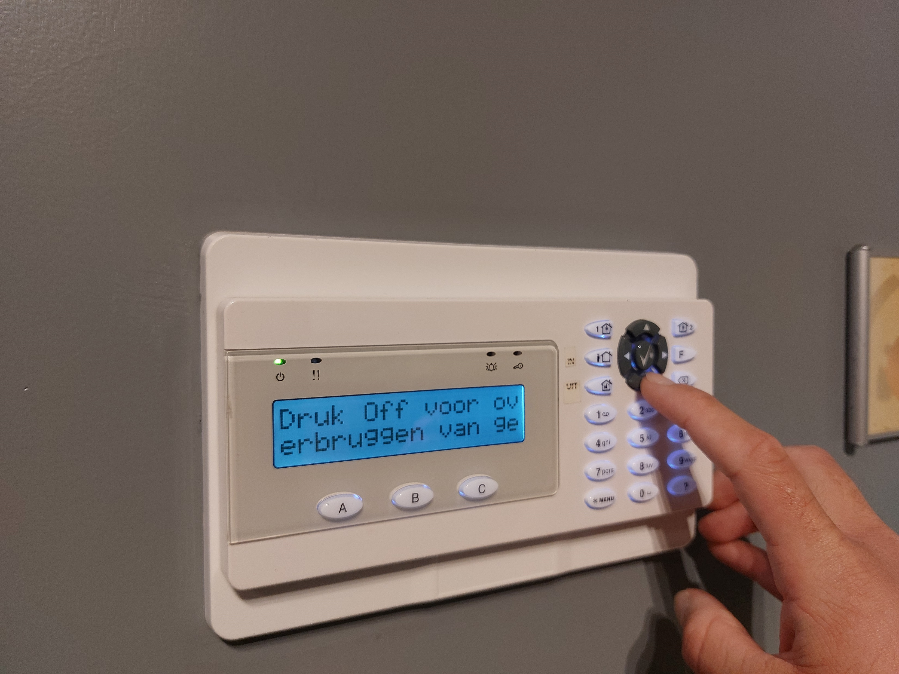
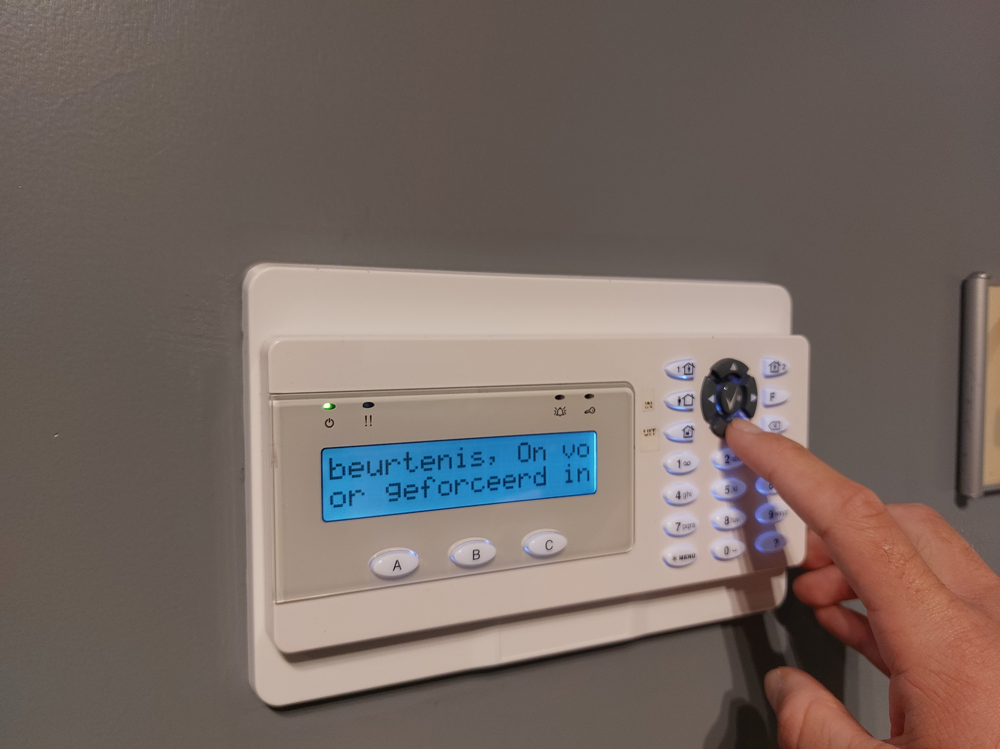
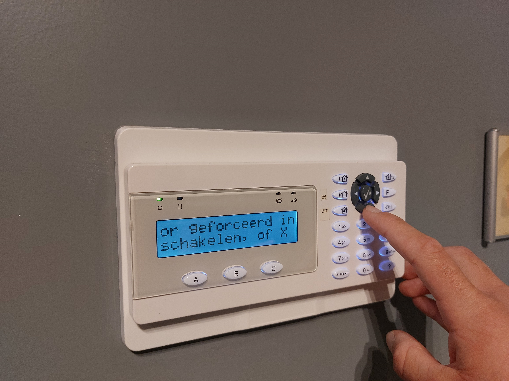
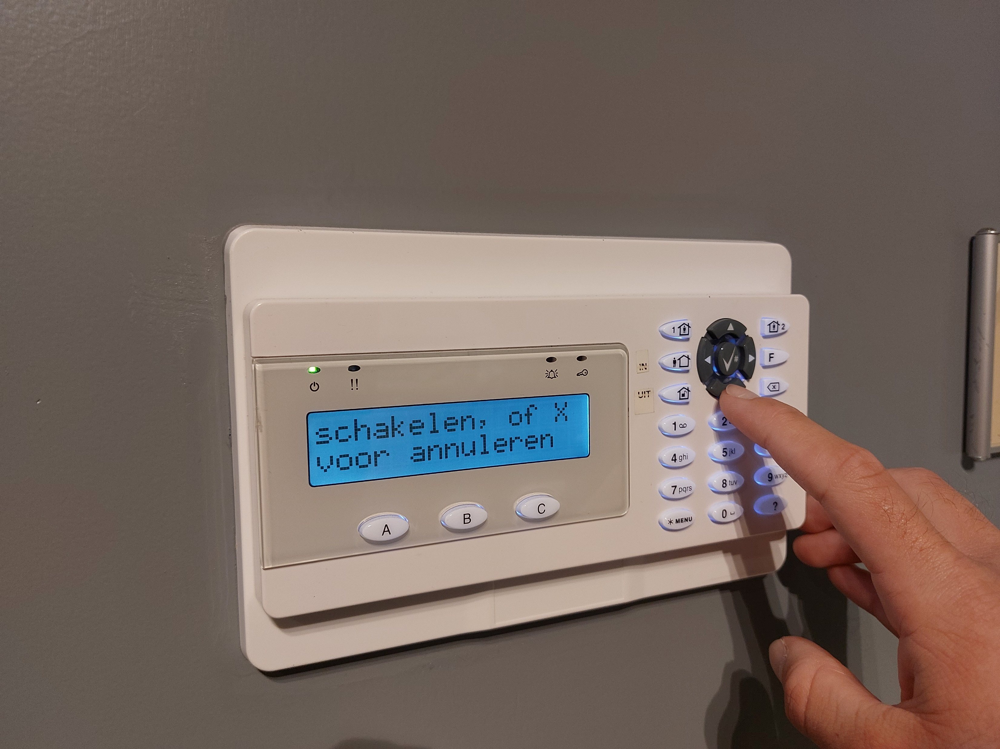
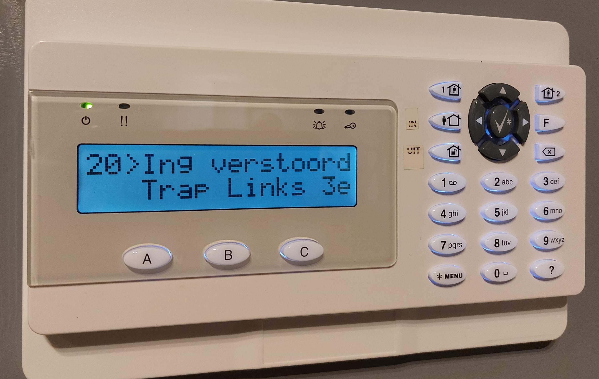
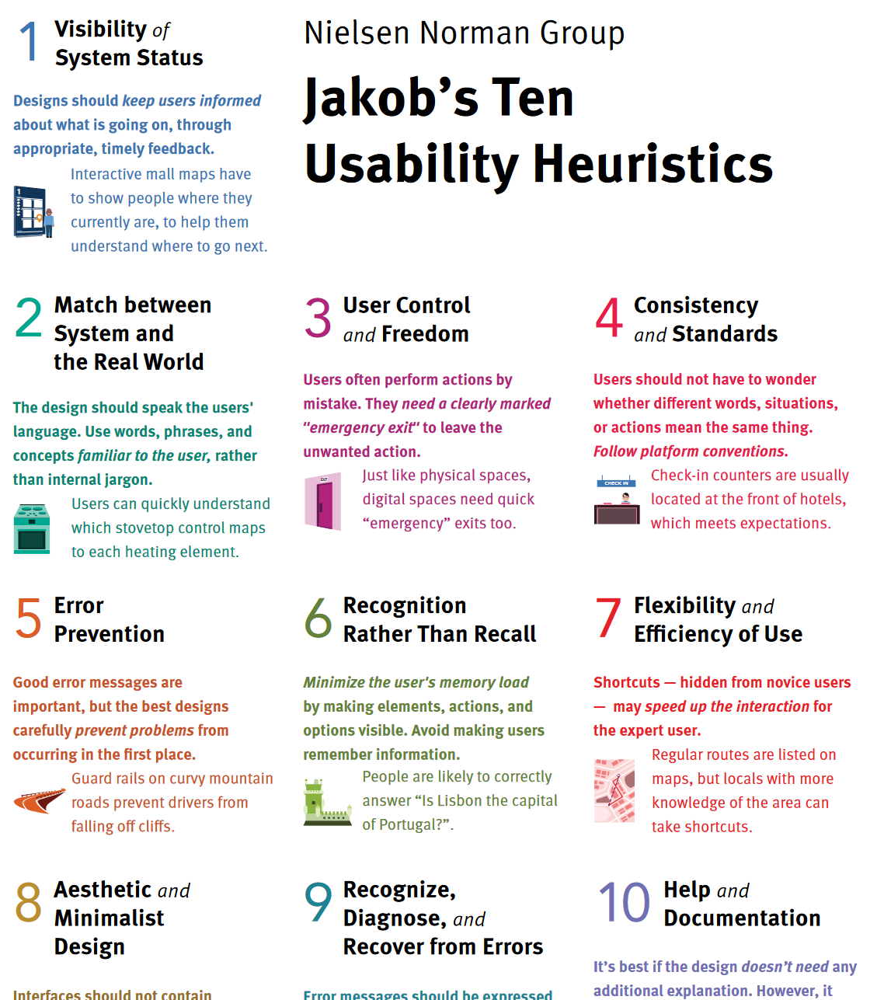
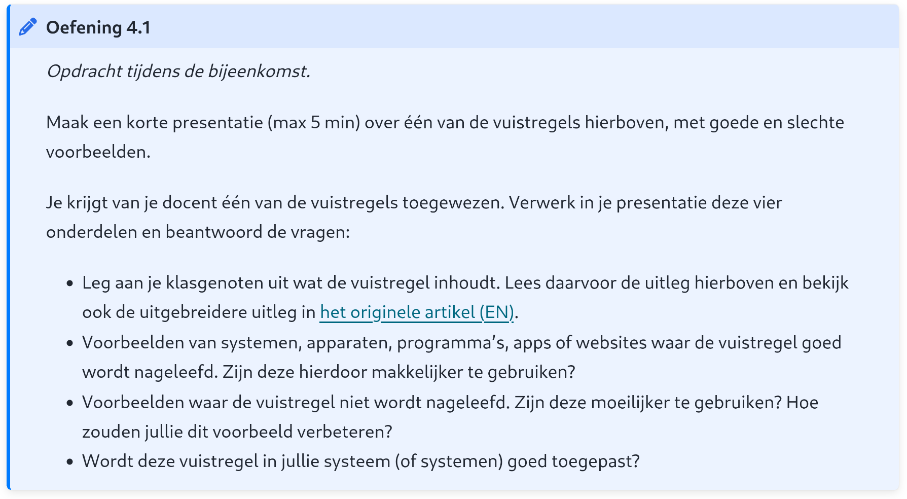

Q-highschool / Basis van CS / Bijeenkomst 6
...
Zorgen dat je systeem bruikbaar is








informatica.q-highschool.nl/basis_cs/2425-4/toepassingen.html
Deadline op {{ eerste_inlevermoment }}
(Tweede inlevermoment op {{ tweede_inlevermoment }})
Volgende week: de usability van jullie systeem